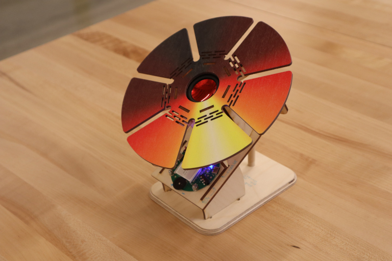
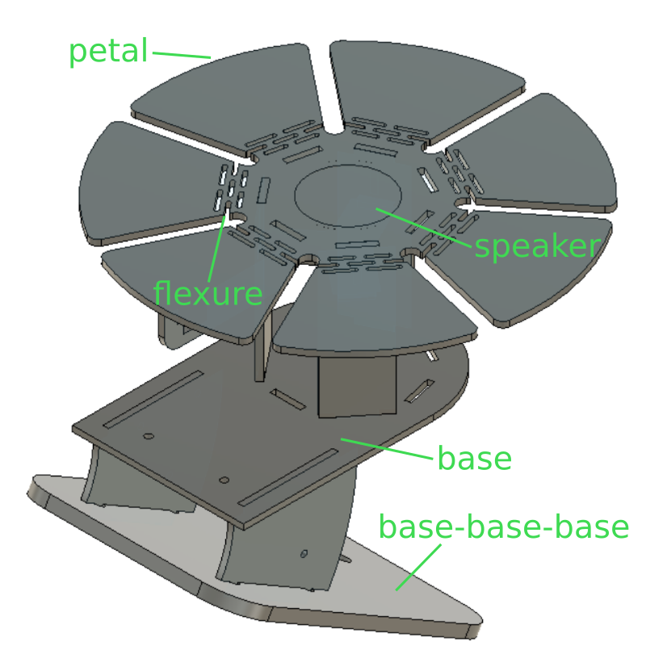
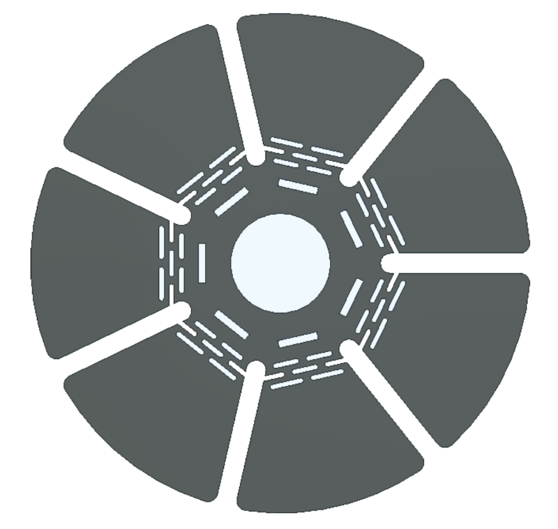
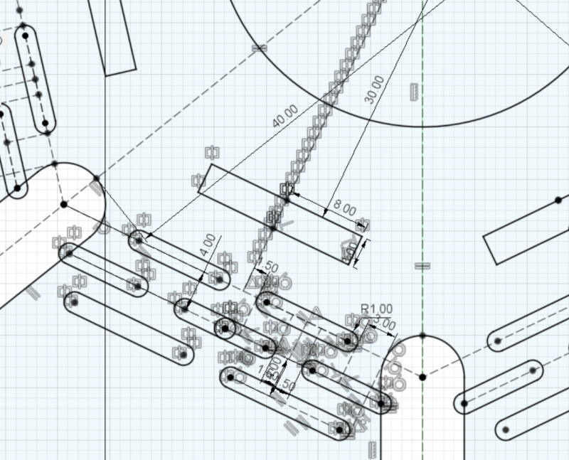
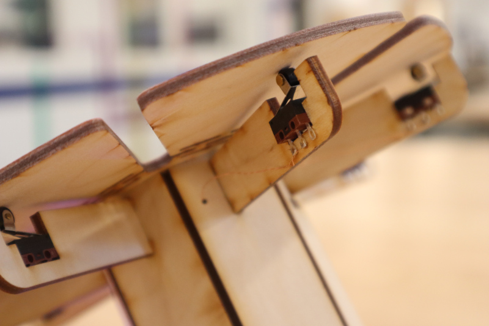
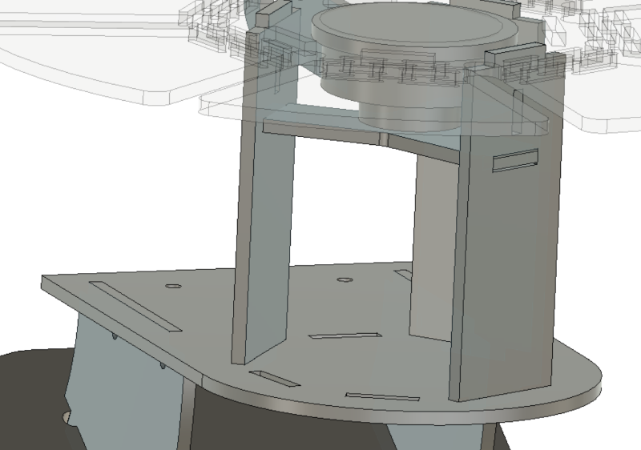
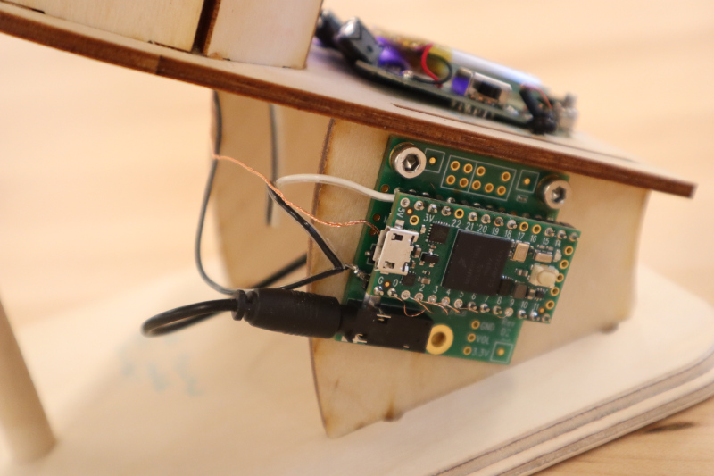
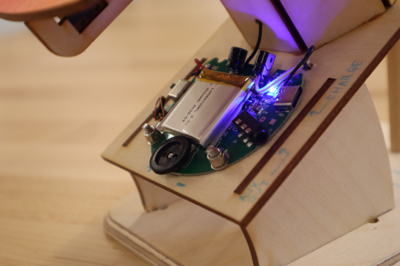
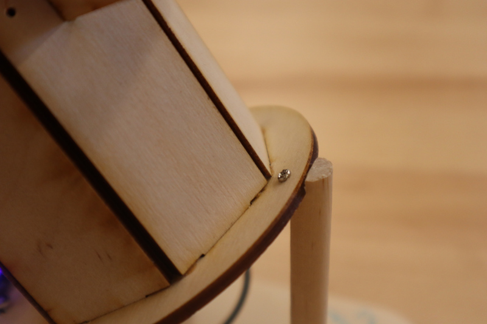

Beat Flower
This colorful thing is a 12-sample soundboard with 6-sound polyphony and a radial user interface which surrounds a speaker:
The microcontroller, a Teensy 4.0 with an audio module, is loaded with various drum clips. One of the seven buttons acts as a shift key for the other six, allowing the user to alternate between sample sets. The default set has several drums of various pitches and types along with a "clap" sound. The shift set has other percussive sounds, like cymbals and beeps. Gus had a great suggestion: intersperse drums and cymbals so each mode is more like a set and can be played reasonably! Alas, I ran short on time to re-flash the processor. But that shouldn't be too difficult to do in the future. Until then, here is a brief clip that can be right clicked to unmute:
Do not forget to re-mute the clip or it will get quite annoying.
Files
Cut files in *.dxf format3D files in not-particularly-useful *.iges format
Arduino firmware for a Teensy 4.0 equipped with an Audio Adaptor Board
Current Status
Works. Plug in to charging port via USB-C jack on amplifier board. Turn on using switch on amplifier board. Press flower petals. Yellow is shift key. Adjust volume using knob on amplifier board. Note battery! Be careful with conductive things around PCBs to avoid shorting. Every once in a blue moon it seems to want to be reset (probably an overflow of something or other). If the blue LED on the amplifier board is on and no sound comes out and the volume is up, try power-cycling the whole thing a few times.Design
Sound boards are amusing; they're particularly fun if they have fast, responsive keys and polyphony. Think Jim Cramer hitting his big red button really fast so it goes "BEWBEWBEWWWWWWW". But building a sound board is really just an excuse to play with flexures and limit switches. The top plate is a single laser-cut sheet of 3 mm (~1/8") plywood:

7 petals! So lots of weird angles. It looks a bit like an oversized pulsejet reed valve. The design has a hole in the center sized to fit a commercial amplified speaker module, and includes a series of parallel slots which allow each petal to flex back and forth. I designed a 1/14th slice, mirrored it, and then made a 7-element circular array; unfortunately I couldn't hide the mirror markers so it looks a bit cluttered:

I've cut flexures like this into plywood before, so I had a rough set of parameters in my head that I was pretty sure would work. Note also that the displacement is minimal, just enough to actuate the limit switches positioned below each petal:

The limit switches are made by CIT Relay and Switch, p/n DM3CQF1002L03, ordered from Digi-Key. I dialed in the mounting gap with a few test cuts so it's a firm press fit. The switch is electrically connected with 34 AWG magnet wire, which escapes through a small hole where the switch mount meets the central post. I included a brace which fits in the post and press-fits to three of the seven uprights:

The limit switch wires tie to a common ground in the post. The ground and the seven signal lines are twisted into a micro-bundle and eventually make their way to the Teensy, which is mounted with its Audio Adaptor Board to the arc-shaped support between the "base" and the "base-base-base" (so named because, as the reader may have guessed, it was not part of the original design):

The base hosts the guts of the tiny amplified speaker module I hacked apart for the project. These little spherical speakers are broadly available online through the usual sources, like Amazon or Aliexpress. The ones we had on hand could be untwisted to expand a cute li'l accordion-shaped chamber to increase the volume of air behind the driver. I tapped into the power lines on the board to power the Teensy; importantly, that means when the Teensy is being reprogrammed, the speaker should be off and unplugged. The lipo battery has a protection circuit built in, but (as mentioned above) users should still keep conductive things like foil and tweezers clear of the amplifier board, shown here:

The firmware only has a few minor modifications to one of Paul's sample programs, and simply pulls the sound clips from onboard microcontroller memory. That was fine since the clips are short; I converted them to the appropriate format with a program called "wav2sketch".
After press-fitting everything together (and gluing a few joints that were on the loose side), I observed that the cantilevered design wasn't nearly stiff enough to absorb the force of users tapping on the petals. The whole thing would flex in an alarming manner; I think it was okay structurally, but it made for a stressful experience. So I added a kickstand to the back:

This was a fun project. It was also a bit of a speed run; I wanted to test a few things like the Teensy sampler and the limit switch mechanism, but was hoping to use the same guts to build a rotary sequencer with user-programmable drums. That never made it out of the notebook, so it's future work, I suppose. I do think I'll give it a different coat of UV ink; the gradient was easy to do quickly, but I don't particularly like the color scheme. And I definitely need to reprogram the sounds so they can be played more effectively. Perhaps a future version could be more expressive, with things like velocity-sensitive keys and a few knobs for good measure. Or maybe it just becomes a neat-looking MIDI controller.

This work is licensed under a Creative Commons Attribution-ShareAlike 4.0 International License.
© zach fredin, 2023